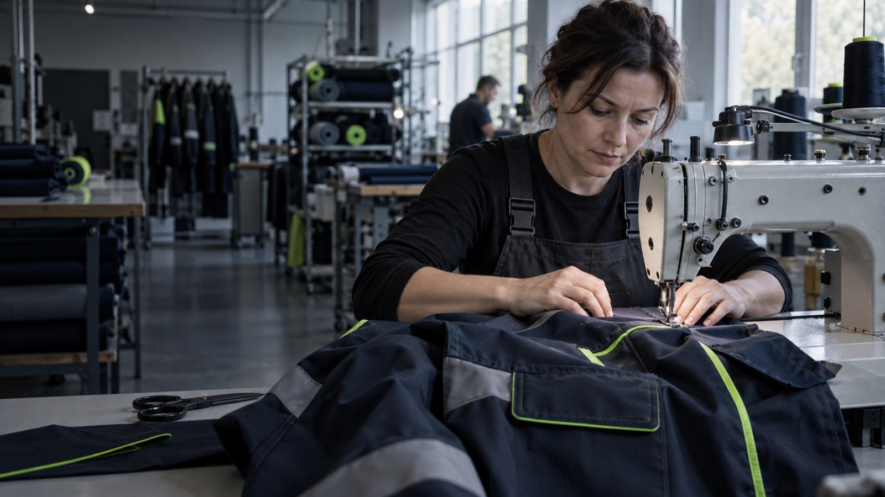
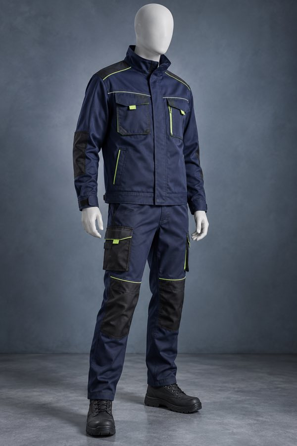
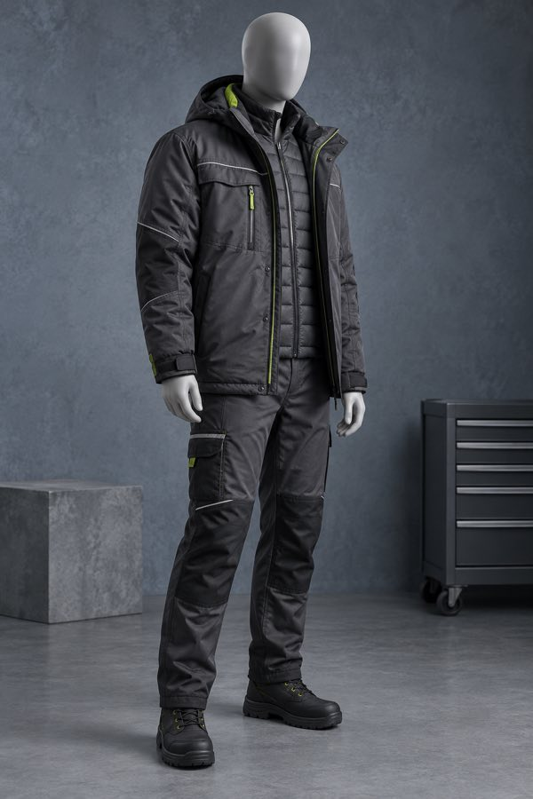
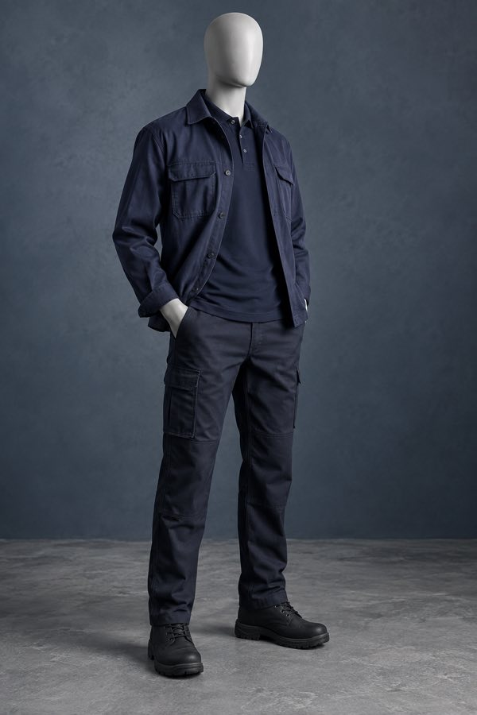
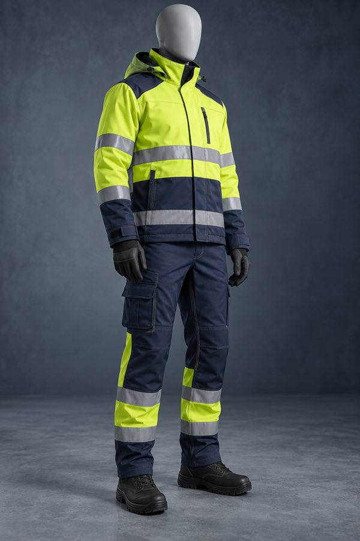
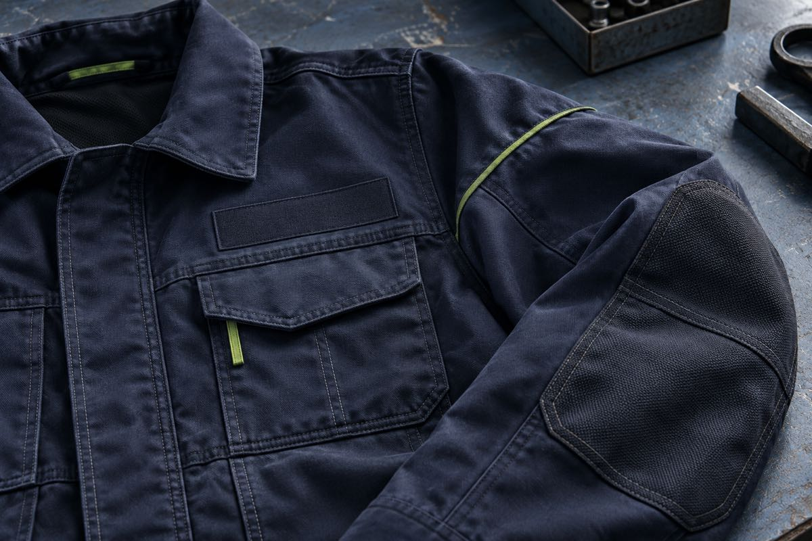

КОЛЯН / РОБОЧИЙ ОДЯГ ДЛЯ КОМАНД
Форма для
вашої роботи.
Костюми, куртки та корпоративний одяг. Обирайте напрямок, колір і деталі комплекту.
Одяг для кожної
робочої задачі.
Оберіть основу комплекту. Конструкцію, тканину та деталі можна обговорити в запиті.

Робочі костюми
Куртка й штани для щоденних задач.
Обрати напрямок
Куртки та жилети
Шари для різних умов і сезонів.
Обрати напрямок
Корпоративна форма
Поло й комплекти в стилі команди.
Обрати напрямок
Сигнальний одяг
Контрастні моделі зі світловідбивними елементами.
Обрати напрямокЗображення показують можливі напрямки дизайну, а не готові вироби реального виробництва.
Річ видно
в деталях.
Кишені, шви, посилені ділянки та місце для брендування продумуються під робочі задачі.
- 01 Зручні кишені
- 02 Посилені зони
- 03 Акцентні деталі

Ваші кольори.
Ваш стиль.
Виберіть колір акцентів на костюмі. Додамо ваш вибір до тексту запиту.
Додати до запитуВід ідеї до комплекту.
- 01
Опишіть задачу
Виріб, кількість, умови роботи.
- 02
Оберіть деталі
Модель, матеріал, кольори, логотип.
- 03
Узгодьте розрахунок
Склад і вартість партії.
- 04
Отримайте форму
Пошиття після погодження замовлення.
Почнімо з
вашого комплекту.
Вкажіть основне — сайт підготує текст заявки, який можна скопіювати.